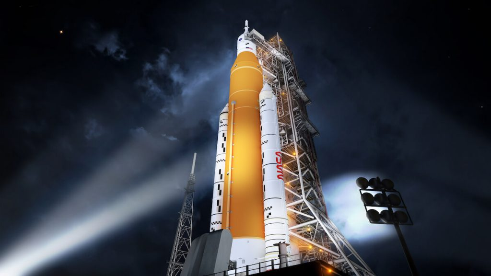
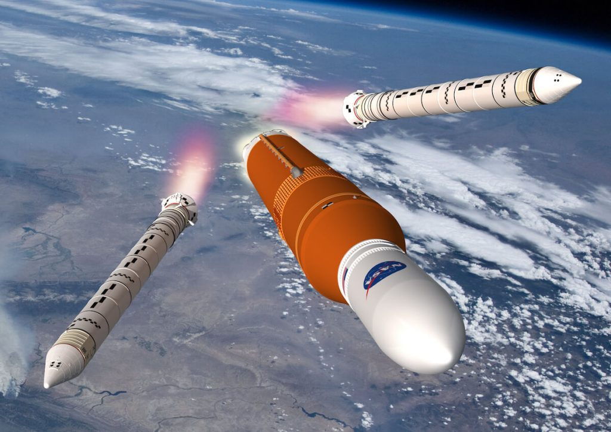
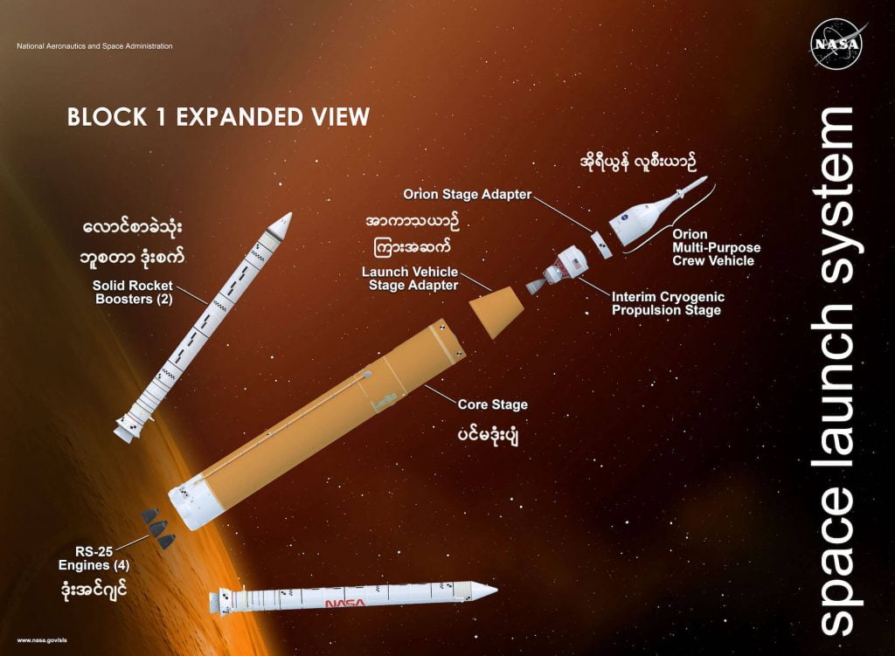
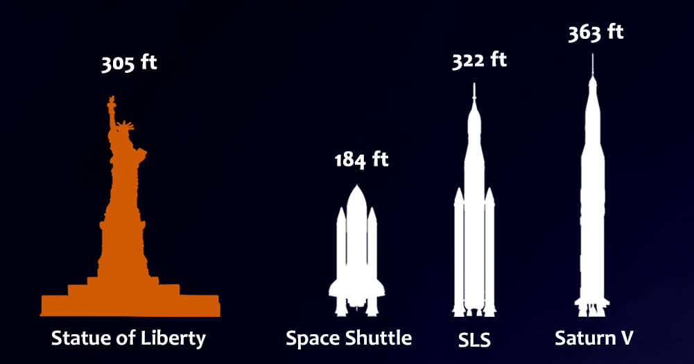
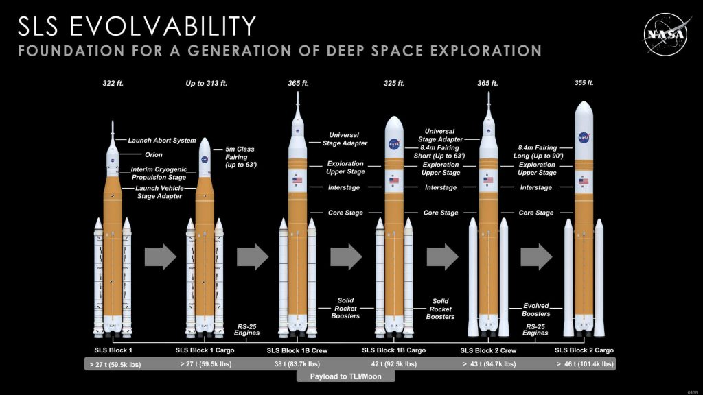

ဒါပေမယ့် ဒါတွေ အားလုံးက မကြာမီ ပြောင်းလဲ သွားတော့မှာ ဖြစ်ပါတယ်။ အခု လာမယ့် ၂၀၂၂ ဧပြီ လထဲမှာ နာဆာရဲ့ အာကာသ လွှတ်တင်မှု စနစ် (Space Launch System (SLS)) လွှတ်တင်မှု အောင်မြင်ခဲ့ရင် နာဆာ အနေနဲ့ ကြီးမားတဲ့ ကုန်ပစ္စည်း တွေကို ကမ္ဘာပတ် လမ်းကြောင်းနဲ့ ကမ္ဘာပတ် လမ်းကြောင်း အလွန်ထိ ရောက်အောင် ပြန်လည် လွှတ်တင်နိုင် တော့မှာ ဖြစ်ပါတယ်။
ဒီ SLS ဒုံးပျံတွေဟာ တန်ချိန် ၄၅ တန်ထိ လေးလံတဲ့ ကုန်ပစ္စည်းတွေ၊ ဂြိုဟ်တုတွေကို လကို ပတ်တဲ့ လပတ်လမ်းကြောင်းထိတောင် ရောက်အောင် လွှတ်တင်နိုင်မှာ ဖြစ်တယ်လို့ ဆိုပါတယ်။ နောက်ပြီး ဒီ SLS ဒုံးပျံတွေဟာ နာဆာရဲ့ ၂၀၂၅ ခုနှစ်မှာ လကမ္ဘာကို ပထမဆုံး အမျိုးသမီး အာကာသ သူရဲကောင်းကို ပို့ဆောင်ပေးမယ့် အာတီးမီးစ် စီမံကိန်း (Artemis programme) ရဲ့ အရေးပါတဲ့ အစိတ်အပိုင်း တစ်ခုလဲ ဖြစ်ပါတယ်။
မူလ တုန်းက ဒီ SLS ဒုံးပျံ ပထမဆုံး စမ်းသပ် ပစ်လွှတ်မှုကို ၂၀၁၆ ခုနှစ်မှာ ပြုလုပ်ဖို့ ရည်မှန်း ထားခဲ့တာပါ။ ဒါပေမယ့် လက်တွေ့မှာတော့ ဒုံးပျံ စီမံကိန်းဟာ မူလ ခန့်မှန်းထားခဲ့ တာထက် ပိုပြီး ခက်ခဲ ခဲ့တာကို တွေ့ရှိလာ ခဲ့ရပါတယ်။
၆ နှစ် ကြာအောင် နှောင့်နှေးခဲ့ပြီးတဲ့နောက် အခု လာမယ့် ဧပြီလမှာ လွှတ်တင်မယ့် ဒုံးပျံဟာလဲ တကယ်တော့ နောက်ဆုံး အပြီးသတ် ဒုံးပျံ မဟုတ်သေးပါဘူး။
ပထမ စမ်းသပ် လွှတ်တင်မှု ၃ ကြိမ် ပြုလုပ်ရာမှာ Block 1 ဒီဇိုင်းကို အသုံးပြု မယ်လို့ သိရပါတယ်။ ဒီ့နောက်မှာ သူ့ကို ထပ်ပြီး အဆင့် မြှင့်တင်ထားတဲ့ Block 1B ဒီဇိုင်း ဒုံးပျံတွေ ကို ဆက်လက် စမ်းသတ်မှာ ဖြစ်ပါတယ်။
နောက်ဆုံး ဒီဇိုင်း ပုံစံကတော့ Block 2 ဒီဇိုင်း ဖြစ်ပြီး ဒီ ဒုံးပျံ က Block 1 မှာ ထုတ်လုပ်တဲ့ ဒုံးပျံတွေထွက် တွန်းအား ပိုကောင်းမယ်လို့ သိရပါတယ်။
ဒါပေမယ့် ယခု လွှတ်တင်မယ့် Block 1 ဒုံးပျံတွေ တင်ကို လက်ရှိမှာ အားအကောင်းဆုံး ဖြစ်နေတဲ့ စေတန် ၅ (Saturn V) ဒုံးပျံ ကြီးတွေထက် ၁၅% လောက် ပိုပြီး တွန်းအားကောင်း မယ်လို့ ဆိုပါတယ်။
လက်ရှိ ကာလမှာတော့ နာဆာရဲ့ ဘတ်ချက် ခွင့်ပြုချက် အရ တစ်နှစ်ကို SLS ဒုံးပျံ တစ်စင်းသာ ထုတ်လုပ် နိုင်မယ်လို့ သိရပါတယ်။
ပထမဆုံး ထုတ်လုပ်မယ့် SLS ဒုံးပျံ ၃ စင်းကို လကမ္ဘာကို အမျိုးသမီး စေလွှတ်မယ့် Artemis စီမံကိန်း အတွက် အသုံးပြုဖို့ စီမံထားပြီး ဖြစ်ပါတယ်။ ၂၀၂၁ မှာ ပြုလုပ်မယ့် ဒုံးပျံ စမ်းသပ်မှုတွေ အောင်မြင်ခဲ့ရင် နောက်တဆင့် အနေနဲ့ လကမ္ဘာ နဲ့ အင်္ဂါဂြိုဟ် တွေပေါ် လူစေလွှတ်ရေး အစီအစဉ် အပြင် အင်္ဂါဂြိုဟ်ထက် ပိုဝေးတဲ့ နေရာတွေ ကိုပါ လူသွားရောက် နိုင်ရေး ကြိုးစားအားထုတ် မှုတွေ ပြုလုပ်သွားမယ်လို့ သိရပါတယ်။

နာဆာ၏ SLS ဒုံးပျံ Block 1
Block 1 ဒုံးပျံဟာ အမြင့်အားဖြင့် ၉၈ မီတာ မြင့်ပါတယ်။ အလေးချိိန် ကီလိုဂရမ်၂.၆ သန်း လေးပြီး ကုန်တန်ချိန် ၉၅ တန်ကို ကမ္ဘာပတ် လမ်းကြောင်း အနိမ့်ပိုင်းကို ပို့ဆောင်ပေးနိုင်မှာ ဖြစ်ပါတယ်။ လကမ္ဘာ အထိ ဆိုရင်တော့ ကုန်တန်ချိန် ၂၇ တန်ကို သယ်ဆောင်နိုင်မှာ ဖြစ်ပါတယ်။ဒီ ဒုံးပျံမှာ လောင်ဆာ အနေနဲ့ လောင်ဆာ အခဲ နဲ့ လောင်ဆာ အရည်ကို ပေါင်းစပ် အသုံးပြုမှာ ဖြစ်ပါတယ်။ လောင်ဆာ ခဲ အနေနဲ့ Polybutadiene acrylonitrile ကို အသုံးပြုပြီး လောင်ဆာရည် ကတော့ အအေးခံ ထားတဲ့ အောက်ဆီဂျင်နဲ့ ဟိုက်ဒရိုဂျင် အရည်ကို အသုံးပြုမှာ ဖြစ်ပါတယ်။
ဒီ ဒုံးပျံဟာ အမြန်ဆုံး နှုန်း တစ်နာရီ ကီလိုမီတာ ၃၉,၅၀၀ နှုန်းနဲ့ ပျံသန်းနိုင်မယ်လို့ ဆိုပါတယ်။
ဒီ SLS ဒုံးပျံမှာ အပိုင်းအားဖြင့် နှစ်ပိုင်း ပါဝင်ပါတယ်။ ဒုံးပျံ လွှတ်တင်စမှာ လျင်မြန်တဲ့ အမြန်နှုန်း ရရှိအောင် တွန်းအားပေးဖို့ Booster ရော့ကက် တွေကို အသုံးပြု ထားပါတယ်။ ဒီ ဒုံးစက် တွေက ပင်မ ဒုံးပျံကြီးရဲ့ ဘေး တစ်ဖက် တစ်ချက်စီမှာ ပူးကပ် ပေးထားတဲ့ ပိန်ပိန် ရှည်ရှည် ဒုံးပျံ နှစ်ခု ဖြစ်ပါတယ်။
ပင်မ ဒုံးပျံ ကိုယ်ထည်ကတော့ ကမ္ဘာပတ် လမ်းကြောင်းနဲ့ ဒီ့ထက် ပိုဝေးတဲ့ နေရာတွေဆီ လူနဲ့ ကုန်ပစ္စည်းတွေ ပို့ဆောင်ပေးဖို့ ဖြစ်ပါတယ်။
လောင်စာခဲသုံး ဘူစတာ ဒုံး (Solid Rocket Boosters – SRB)
ဒီ ဘူစတာ တွန်းအားပေး ဒုံးတွေက ဒုံးပျံ လွှတ်တင်စမှာ ကမ္ဘာပတ် လမ်းကြောင်းထဲ ရောက်ဖို့ အရှိန် မြှင့်ပေးတဲ့ အခါ အသုံးပြုတာ ဖြစ်ပါတယ်။ ဒီ ဒုံးတွေဟာ လောင်စာ အခဲကို အသုံးပြု ထားပါတယ်။ လောင်စာ အခဲဟာ လောင်စာ အရည်ထက် လောင်အား ပိုကောင်းပြီး လောင်ကျွမ်း မှုလဲ ပိုမြန်တာမို့ လုံလောက်တဲ့ တွန်းအားကို မြန်မြန် ရရှိ စေတာပဲ ဖြစ်ပါတယ်။ဒါပေမယ့် မိနစ် အနည်းငယ်ပဲ လောင်ကျွမ်းနိုင်ပြီး လောင်စာ ကုန်သွားမှာ ဖြစ်ပါတယ်။ လောင်စာ ကုန်သွားရင်တော့ ပင်မ ဒုံးပျံ ကိုယ်ထည်ကနေ ဖြုတ်ချခဲ့ပြီး လေးထီးနဲ့ ချပေးပြီး နောက်တစ်ကြိမ် ပစ်လွှတ်မှုမှာ ပြန်လည် အသုံးပြုနိုင်မှာ ဖြစ်ပါတယ်။

ပင်မ ဒုံးပျံ ကိုယ်ထည် (Core Stage)
ပင်မဒုံးပျံ ကတော့ ဟိုက်ဒရိုဂျင် နဲ့ အောက်ဆီဂျင် လောင်ဆာရည် တွေကို အသုံးပြု ထားပါတယ်။ ဒီ ဒုံးပျံမှာ ဟိုက်ဒရိုဂျင် လောင်စာရည် လီတာ ၂ သန်း နဲ့ အောက်ဆီဂျင် လောင်စာရည် လီိတာ ၇၅၀,၀၀၀ သယ်ဆောင် နိုင်မှာ ဖြစ်ပါတယ်။ဒီ လောင်စာတွေကို လောင်ကျွမ်းပြီး ကမ္ဘာပါတ် လမ်းကြောင်း အနိမ့်ပိုင်းကို ဒုံးပျံ ဝင်ရောက် သွားနိုင်ဖို့ အချိန် ၈ မိနစ်ခန့် ကြာမြင့်မှာ ဖြစ်ပါတယ်။
RS-25 ဒုံးစက် အင်ဂျင်
ဒီ ဒုံးစက်တွေဟာ မူလက နာဆာရဲ့ အာကာသ လွန်းပျံယာဉ် (Space Shuttle) တွေမှာ အသုံးပြုဖို့ တီထွင် ထုတ်လုပ် ထားခဲ့တာ ဖြစ်ပါတယ်။ ဒီ ဒုံးစက် အင်ဂျင် ၄ လုံးကို ပင်မဒုံးပျံမှာ တပ်ဆင် ထားပါတယ်။ ဒီ ဒုံးစက် တစ်လုံးချင် စီကို ဘေး ဘယ်ညာ ရှေ့နောက် လှည့်လို့ ရတာမို့ ဒုံးပျံ ပျံသန်းမှု ထိန်းချုပ်ရေး အတွက်လဲ အသုံးပြုနိုင်မှာ ဖြစ်ပါတယ်။အာကာသယာဉ် ကြားခံ အဆက် (LVSA)
ပင်မ ဒုံးပျံနဲ့ ကုန်တင်ယာဉ် (သို့) လူလိုက်ပါတဲ့ အာကာသ ယာဉ် တို့ကို ချိတ်ဆက်ပေးမယ့် အဆက် ဖြစ်ပါတယ်။ Launch Vehicle Stage Adapter (LVSA) ဟာ ကတော့ပုံ ရှိတဲ့ သတ္တုကွင်း တစ်ခု ဖြစ်ပြီး အောက်ပိုင်းက ဒုံးပျံနဲ့ အပေါ်ပိုင်းက လူလိုက်ပါတဲ့ အာကာသယာဉ် (သို့) ကုန်တင်ယာဉ် တို့ကြားမှာ ဆက်ပေးထားတဲ့ အစိတ်အပိုင်း ဖြစ်ပါတယ်။ဒီ အပိုင်းဟာ ဒုံးပျံ နဲ့ အာကာသယာဉ် အပိုင်း နှစ်ပိုင်းကို ဆက်ပေးထားရုံတင် မကပဲ ဒီ အာကာသယာဉ်ကို အာကာသထဲမှာ တွန်းအားပေးမယ့် ဒုံးစက် (Interim Cryogenic Propulsion Stage) ကိုလဲ အကာအကွယ် ပေးထားပါတယ်။
အိုရီယွန်အာကာသယာဉ် (Orion spacecraft)

ကမ္ဘာပါတ် လမ်းကြောင်း အနိုမ့်ပိုင်းကို အာကာသ ယာဉ်မှူးတွေ ရောက်အောင် ပို့ပေးမယ့် အာကာသ ယာဉ်ကတော့ အိုရီယွန် အာကာသယာဉ်ပဲ ဖြစ်ပါတယ်။
ဒီ အိုရီယွန် အာကာသ ယာဉ်ကို ပင်မဒုံးပျံကြီးရဲ့ ထိပ်မှာ တပ်ဆင်ပြီး သယ်ဆောင်မှာ ဖြစ်ပါတယ်။ ဒီ အာကာသယာဉ်ဟာ အာကာသယာဉ်မှူး ၆ ဦးကို ကမ္ဘာပါတ်လမ်းကြောင်း အနိမ့်ပိုင်းထိ ရောက်အောင် ပို့ဆောင်ပေးနိုင်မှာပါ။
ဒီ အိုရီယွန် အာကာသယာဉ်ရဲ့ ထူးခြားချက် ကတော့ ပစ်လွှတ်စဉ်မှာ တစ်စုံတစ်ခု ချွတ်ယွင်းမှု ရှိခဲ့ရင် အာကာသ ယာဉ်မှူးတွေကို အသက်ကယ်မယ့် အသက်ကယ် စနစ် ထည့်သွင်း တည်ဆောက်ထားတာပဲ ဖြစ်ပါတယ်။
Launch Abort System လို့ ခေါ်တဲ့ ဒီအပိုင်းဟာ တစ်စုံတစ်ခု ဖြစ်လာခဲ့ရင် အာကာသ ယာဉ်မှူးတွေကို အန္တရာယ်နဲ့ ဝေးရာကို သယ်ထုတ်သွားမယ့် စနစ် ဖြစ်ပါတယ်။
ကမ္ဘာပါတ် လမ်းကြောင်းထဲ ဝင်ရောက် သွားတဲ့ အခါကျရင် အောက်က တွန်းပေးခဲ့တဲ့ ပင်မဒုံးပျံ ကို ဖြုတ်ချခဲ့မှာ ဖြစ်ပါတယ်။ ဒီလိုပဲ အာကာသ ယာဉ်မှူးတွေကို အသက်ကယ်မယ့် Launch Abort System ကိုလဲ ဖြုတ်ချခဲ့မှာ ဖြစ်ပါတယ်။
ကျန်ရစ်ခဲ့တဲ့ လူစီး အာကာသ ယာဉ်ကိုတော့ ဒီ အာကာသ ယာဉ်မှာ တပ်ဆင်ထားတဲ့ Interim Cryogenic Propulsion System ကနေပြီး လကို ရောက်တဲ့ အထိ ဆက်လက် တွန်းအားပေးသွားမှာ ဖြစ်ပါတယ်။
နာဆာရဲ့ SLS ဒုံးပျံတွေဘယ်လောက်ကြီးသလဲ
အပေါ်မှာ ရှင်းပြခဲ့တဲ့ Block 1 ဒုံးပျံဟာ ထောင်ထားလို့ ရှိရင် ၉၈ မီတာ မြင့်ပါတယ်။ Block 2 ဒုံးပျံ ဆိုရင်တော့ ၁၁၁ မီတာတောင် မြင့်မှာ ဖြစ်ပါတယ်။ဒီ ဒုံးပျံ တွေရဲ့ အမြင့်ကို အောက်မှာ ထင်ရှားတဲ့ အဆောက်အဦ နဲ့ အရာဝတ္ထု တွေနဲ့ နှိုင်းယှဉ် ပြထားပါတယ်။


How NASA’s Space Launch System will take crew to the Moon and Mars | Sky At Night
Space Launch System | NASA